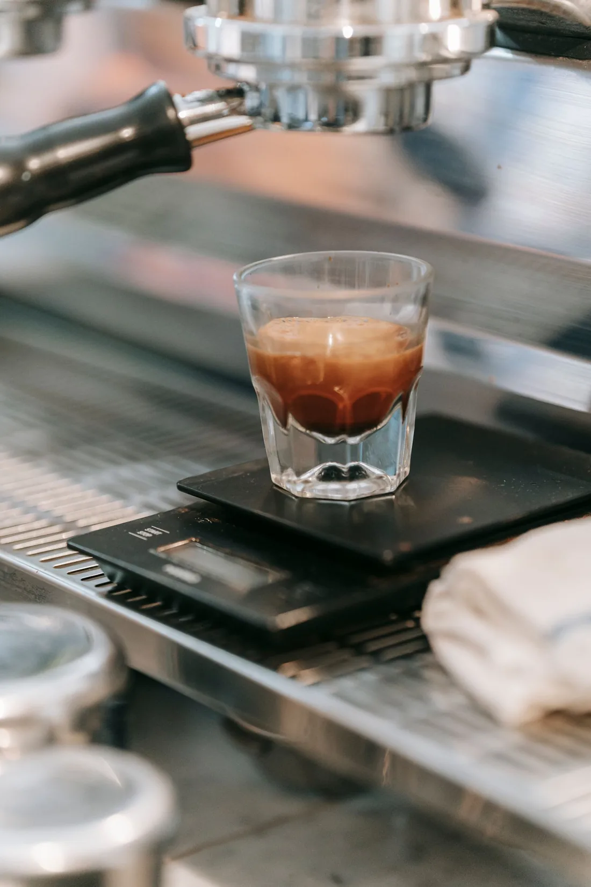
Eigen bonenEspresso
Kort, vol en net iets zoeter dan je denkt. Zo proef je onze bonen het best.
WarmOok als decaf
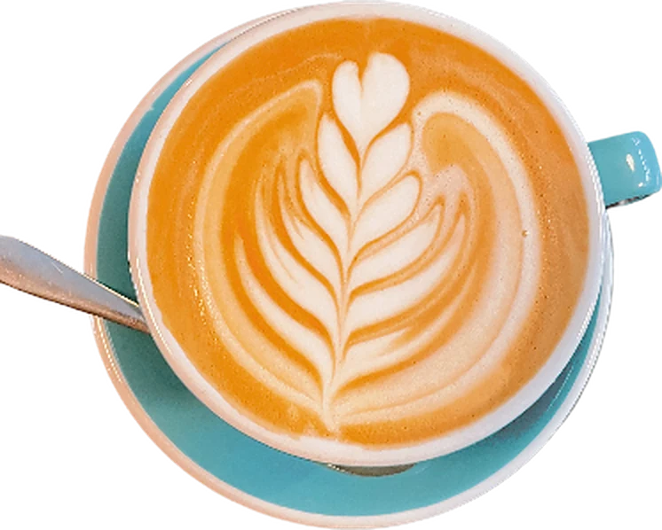
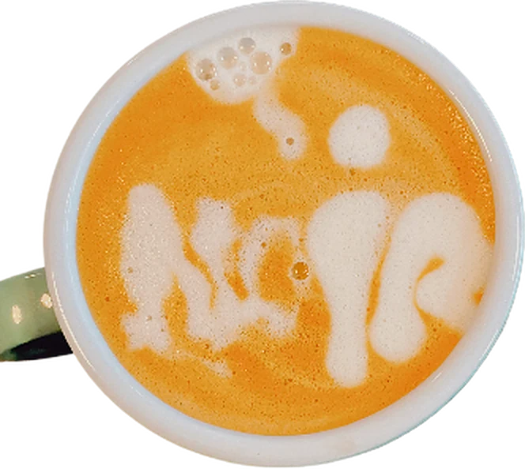
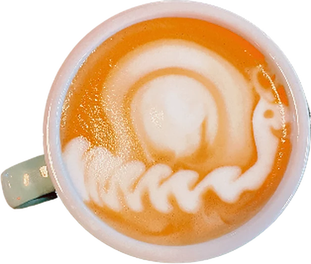
Naamsestraat 49, Leuven
Onze bonen, gebrand bij onze eigen branderij. Liever havermelk of soja? Of toch decaf? Zeg het gerust aan de toog.
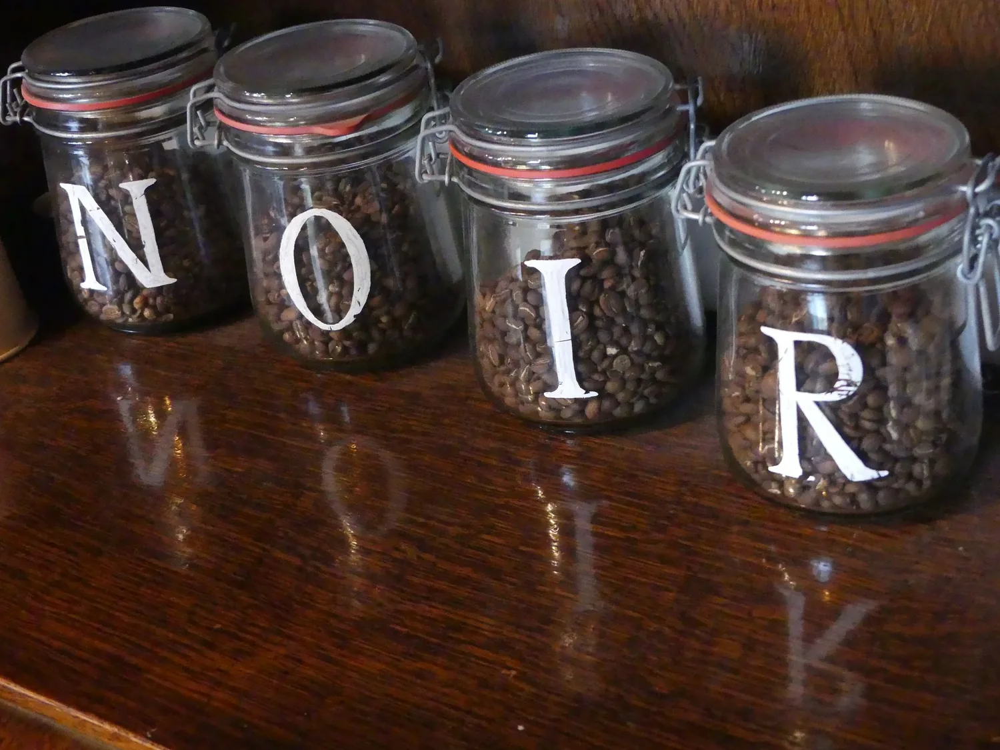
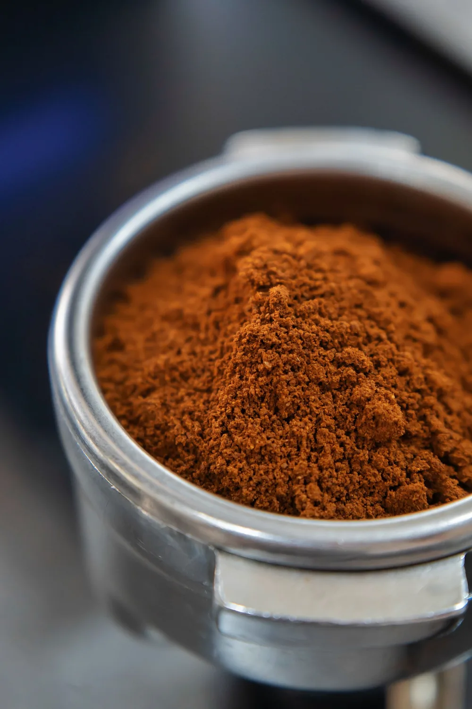
De koffie in je kop komt van Naft, onze eigen branderij. We zoeken bonen die we zelf graag drinken en branden ze tot ze smaken zoals we willen: voor espresso net iets voller, voor filter net iets lichter.
Yassin, die je misschien nog kent van achter de toog, leidt sinds kort de branderij. Zo blijft alles in huis, van de boon tot in je kop.
Bijpraten met vrienden, rustig studeren of gewoon even niks. Bij ons mag het allemaal, zo lang als je wil.
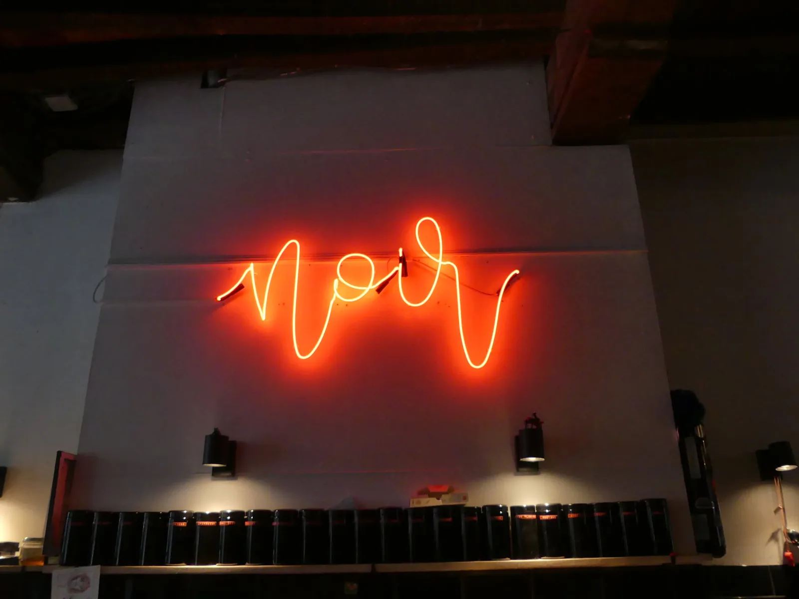
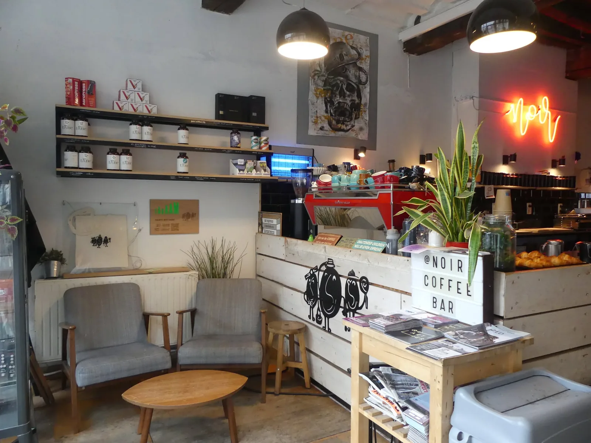
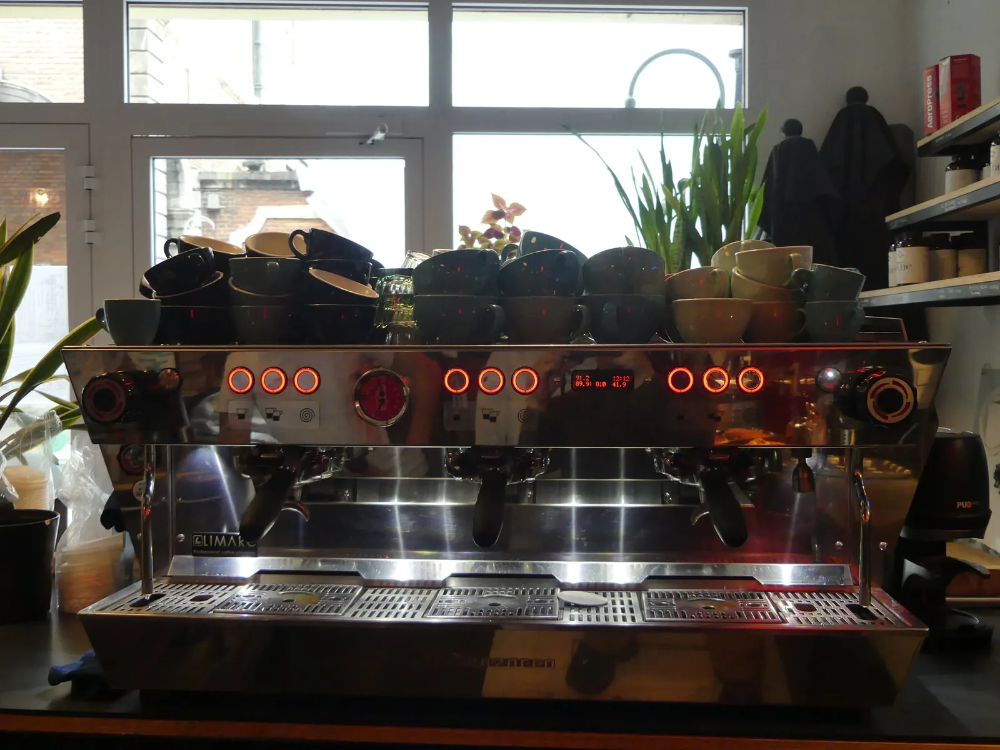
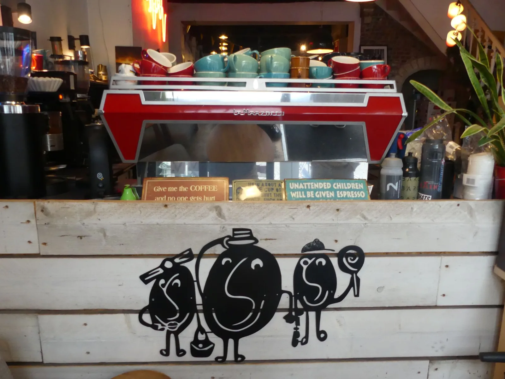
Coffee, cycling and enjoying life. Na de rit staat de koffie klaar, en soms vertrekt de rit gewoon hier.
Volg onze ritten op Instagram →Bijna duizend mensen schreven al iets over hun koffie bij ons. Daar zijn we best trots op.
Lees ze op GoogleHet overgrote deel geeft ons de volle vijf sterren. Kom zelf proeven en zeg ons wat jij ervan vindt.
Verdeling van de reviews op Google.
Binnen bij de toog of buiten op het terras in de Naamsestraat. Voor een groep? Bel of stuur ons even een berichtje.
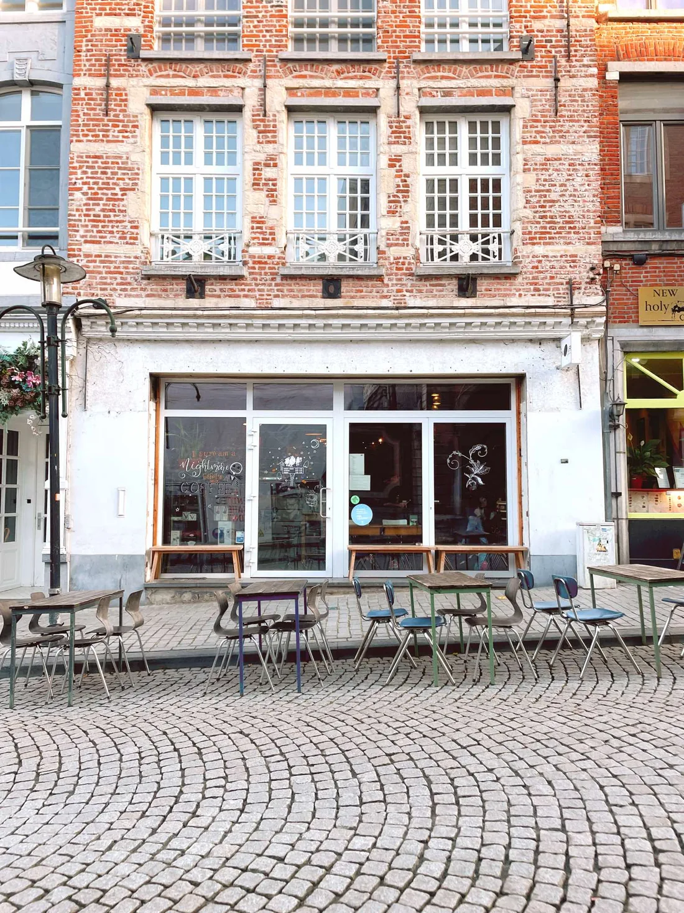
Ik maakte deze demo voor jullie om te tonen wat er kan. Na een kort gesprek maak ik er iets veel persoonlijkers van, helemaal naar jullie wens.
Vrijblijvend. Ik kom langs of we bellen.
Op maat, op jullie eigen domein.
Geen voorschot. Jullie betalen pas als alles klaar is.
Hosting, domeinnaam en kleine wijzigingen, zoals nieuwe openingsuren.
Omdat een voorbeeld meer zegt dan een mail. Zo zien jullie meteen wat er kan, en het kost jullie niets.
Nee. Het gesprek is vrijblijvend. Vinden jullie het niks, dan is het daarmee gedaan.
Na ons gesprek staat jullie site binnen 10 tot 14 dagen online.
Zeker. Jullie domeinnaam kan gewoon blijven, de nieuwe site komt in de plaats van de oude.
Nee, dat doe ik op basis van ons gesprek. Eigen foto's zijn mooi meegenomen, maar niet nodig om te starten.